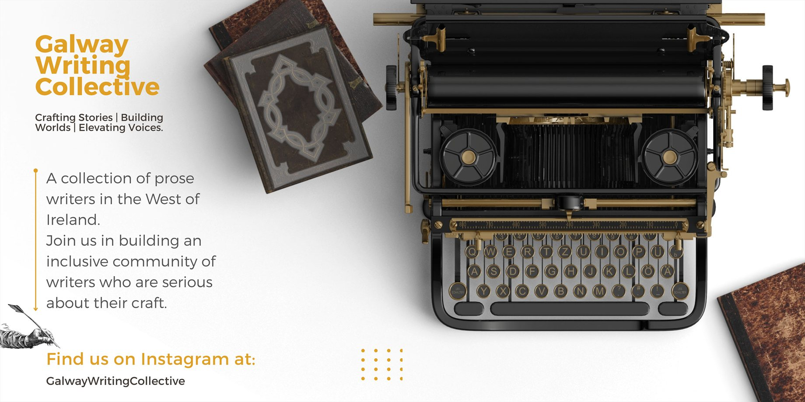

About Me
The Tool Belt
- Narrative Design & Game Writing
- Editorial
- Worldbuilding & Lore
- Fiction Writing
- Music Composition & Sound Design
- Java Development
Graduated with a first-class honours in English, Philosophy, and Creative Writing, mentored by internationally acclaimed voices including Mike McCormack, Alan McMonagle, and Nicole Flattery. Under their guidance I combined a love of magical realism with a clinical understanding of story structure and character. My written work is primarily in fiction and short fiction across the short story, and in games. Across my work, I have explored memory, social cohesion and constructs, identity, and the liminal.
In 2020 my work The Circle, The Sickle, The Star was shortlisted for the Globe Soup Prize. Since then I have applied my craft to games and cross-media IP: from developing worlds in Soul Atlas; to consultations and developmental edits for Table Topple across branching fiction and story-driven games, to serving as Managing Editor at Inspire Me Korea, a cultural magazine bridging global audiences and Korean culture.
I served as worldbuilder, lore-keeper, writer, and editor on Soul Atlas, an ambitious cross-media fantasy project. In my time there, I combined geopolitics, culture, ideology, and philosophy with topography and real world history to co-create an original, cohesive universe with original characters. I have contributed as editor on promotional trailers and on their graphic novels. I continue to work with the team as an occasional editor, and as a narrative and worldbuilding consultant.
I have worked on multiple occasions with Table Topple as a developmental editor and narrative consultant, most recently completing a full developmental edit of their forthcoming interactive choose your own adventure title, Those Folks at the Top. I have also worked as a consultant on their upcoming game, set in the same universe.
I am currently pursuing a career in Java Development while keeping narrative craft at the centre of the work. I am interested in the intersection where the two meet: systems that carry story, and stories shaped by the systems that hold them. Currently, I am working as a solo dev, writer, composer, and sound designer on an early prototype of an upcoming Ascii-art title set in a dark and absurd future. More details will follow!
I am available for freelance, full-time, and consulting work in narrative design, editing, worldbuilding, Java development, and cross-media storytelling. If you're looking to build a new world, or breathe life into an existing one, I would like to hear about it.
J.M O'Donnell

Branching Narrative Structure
A specialism: applying the principles of story structure to branching narrative.
Most branches in games drive moments. Few embody theme or argument.
My work in branching narrative began in Twine, during the 2024 Global Game Jam in Galway, Ireland. Publishing my first (terrible!) game generated a real interest in undertaking a serious project to test what Twine is capable of.
During this time I attended Charlene Putney's course on Writing for Video Games. Putney has written for games since 2013, with credits including Divinity: Original Sin 2, Baldur's Gate 3, NUTS and Saltsea Chronicles. Charlene's course led me to begin developing Emergent, an upcoming game built in Twine. Emergent is an absurdist take on a late-AI world that explores consequence in narrative terms, and literally through a subversive interaction with story in a way that forces players to reimagine their relationship with, and understanding of, AI and its power to imitate human connection.
Charlene's course, and my own work, led me into a research drive on how story structure is applied to branching narratives. What I found was a distinct lack of clarity on the subject, as well as a lack of expertise that signalled a further lack of methodology or application in the industry. Consequently, I began researching the topic independently.
When I first encountered Those Folks at the Top, it provided an enormous opportunity to develop my own framework and philosophy for applying the principles of storytelling to branching narratives, having too-often experienced in “choice-matters” games branches that drive moments rather than coherent arguments that reflect the driving thematic argument of the work.
In developing Richard's work I established rules and principles, a philosophy, a series of tenets, and a deep understanding of how to address an industry-prevalent gap: namely, how to give branching narratives a structured spine that elevates branches and injects them with purpose and emotional impact.
This is a unique and highly specific set of expertise, and one I bring to clients who want their branching narratives to have the structure that separates good moments from great storytelling.
In development
Emergent
Branching narrative in Twine. Writer and developer.
Table Topple
Those Folks at the Top
Full developmental edit of a choice-driven title.
Media & Projects
Engage with my multimedia projects including trailers, music, animatics, and interactive itch.io experiments.
Published Works
— Featured articles and magazine contributions —
Developmental Editor
Those Folks at the Top — Richard Naughton
Full developmental edit of a forthcoming interactive, choice-driven title.
Managing Editor
Inspire Me Korea
Cultural magazine bridging global stories, identity and cultural insight.
Worldbuilder & Editor
Soul Atlas
Lore systems, regional development, and editorial review across film, games and comics.
Zero Point Natives
Listen on BandcampElysium Fields
J.M. O'Donnell
Electronic • Atmospheric • Video Game Music
Tracklist

The Galway Writing Collective
Crafting Stories | Building Worlds | Elevating Voices.
When I arrived in Galway in 2019, a prose collective didn't exist, and I suffered under the common belief that writing is something that has to be done in isolation. However, I wanted to change this, and when I couldn't find a collective, I decided to form one.
Over five years I led a weekly prose workshop, facilitated four monthly events, and established Galway's only regular technical editing workshop. I built a brand that drew recognition from literary journals, publishers and authors, and a community that supported emerging writers across the West of Ireland.
The Collective concluded in 2024, though I hope it has inspired others to continue the work of building a community and bringing writers together.
J.M O'Donnell, Founder of The Galway Writing Collective.
Testimonials
Hear from collaborators, clients, and peers about my work.